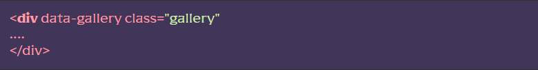
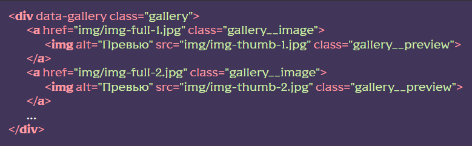

Модуль “Галерея”
Функціонал підключає галерею (LightGallery). При натисканні на зображення картинки повне зображення відкривається з можливістю слайд-шоу. Можна створювати як вбудовані, так і лайтбокс-галереї (в правому куті розташовується ряд кнопок (налаштовується) для розширених функцій. Наприклад: “Закрити слайд-шоу”, “Завантаження зображення” та ін. Галерея, підтримує як прості зображення, так і відео чи фрейми.
Для роботи галереї необхідні зображення (відеофайли) у двох форматах: мініатюри – зображення невеликого розміру, які використовуються для попереднього перегляду та зображення повного розміру – необхідні для детального перегляду.
Підключення функціоналу
[JS] У файлі js/app.js розкоментувати рядок import “./files/gallery.js”;
Використання функціоналу
[HTML] До тегу батька об’єктів галереї, додаємо HTML-атрибут data-gallery.

Сам об’єкт галереї складаються з такої конструкції (тег для повного розміру зображення і всередині тег для превью). Наприклад, можна використовувати таку розмітку:

Розташування та додаткові дані
Функціонал знаходиться у js/files/gallery.js
Детальна документація щодо роботи з самим плагіном на сайті галереї https://www.lightgalleryjs.com/docs/